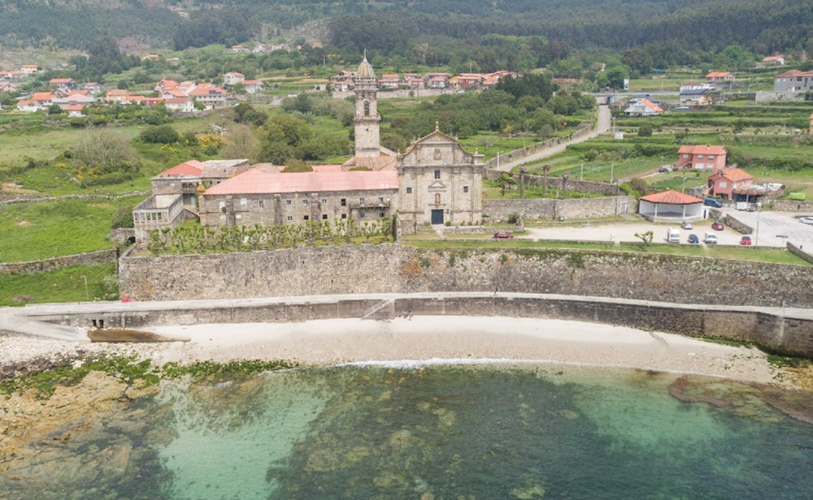

Oia tiene cosas interesantes como el monasterio.
De la Edad del Bronce se han encontrado relieves y pinturas rupestres en los montes orientados hacia la costa.
Hay abundantes restos de castros levantados por los celtas, principalmente, el yacimiento arqueológico de Bouza Fariña, en Mougás, en el cual se encontró un altar de sacrificios que ahora se encuentra en el Museo Arqueológico de Pontevedra.
Y en Viladesuso hubo una villa romana con una ara que actualmente se encuentra en el Museo Diocesano de Tuy.
Sin embargo, la historia de Oia comenzó a girar en torno al Monasterio de Santa María de Oia, fundado por Alfonso VII en 1132 como abadía, siendo su primer abad Pedro de Incio.
En 1185 adoptó la reforma cisterciense, sometiéndose a la abadía de Claraval la cual se incorporó en 1547 a la congregación cisterciense de Castilla. Dicho monasterio fue desamortizado y vendido a particulares en 1835, cuando la iglesia del monasterio se convirtió en iglesia parroquial.
| Blog de Darío | |
|
Sus orígenes aparecen rodeados de incógnitas y de noticias más legendarias que históricas.a La primera noticia documental existente de relativa fiabilidad que nos habla de una vida monástica en Oia hay que situarla en el primer tercio del siglo XII,3 hacia el año 1137, momento en que el rey Alfonso VII realiza diversas donaciones al monasterio.
Pero cuando ya es posible constatar con toda seguridad el origen de esta abadía es en 1149 fecha en la que el monarca anteriormente citado concede a los monjes que allí vivían “SUB REGULA BEATI BENEDICTI” todas las posesiones reales de los lugares de Mougás, Villadesuso y Pedornes.4 Años después concretamente en 1185, Oia se anexiona a la regla reformada de San Bernardo5 lo que va a repercutir en su fisonomía arquitectónica, austera y sobria, propia de la arquitectura cisterciense.
Los imponentes muros almenados del cenobio simulan ser una fortaleza costera. Así, en el siglo XVII, por su privilegiada posición estratégica constituyó un importante baluarte defensivo frente a los constantes saqueos e invasiones marítimas tan frecuentes en aquella época en las rías gallegas. Habría que citar como ejemplo el acontecimiento acaecido en el año 1624 cuando los monjes desde la Plaza de las Armas demostraron su valor militar con el hundimiento y fuga de cinco bajeles de piratas turcos que frecuentaban la costa, hecho que les hizo merecedores del sobrenombre de “monjes artilleros”.6 Sobre la base de esta heroica hazaña, Felipe IV concedió a esta abadía nuevos privilegios y donaciones entre ellos la confirmación del título de Real e Imperial Monasterio de Santa María de Oia lo que va a coincidir con la época de su mayor esplendor económico.
Interesante recordar que entre muchas de las labores que los monjes introdujeron en la zona fue la cría de caballos en estado de libertad que se hallaban en los montes pertenecientes al monasterio. Esta práctica que se conserva todavía en los bosques de la zona, da lugar a un espectáculo de fama internacional: A rapa das bestas. Los monjes de Oia, además de la roturación de tierras y la apertura de caminos, implantaron el cultivo de la vid según la costumbre de las abadías francesas cistercienses. Hoy en día podemos degustar sabrosos caldos bajo la denominación de origen Rías Baixas.
En el s. XVI acontece otro hecho a destacar en la historia del monasterio, la leyenda de la Virgen del Mar,7 actual patrona del Concello de Oia. Todo comienza cuando en 1581, unos labradores encuentran en un acantilado de la costa, en un lugar llamado A Orilluda, una imagen de una virgen unida por una cadena a la figura de un perro.
Tras rescatarla, fue llevada a hombros en procesión hasta el Monasterio. Al llegar los hombres enfervorizados explican a los perplejos monjes que la imagen ha llegado hasta allí desde el mar a lomos del cánido que luce un collar de conchas. Los monjes tomaron pues sobre sus propios hombros la imagen y la condujeron a la iglesia del Monasterio. Toman como milagro el hecho de que no se hiciera pedazos en los escarpados acantilados de la zona, aunque lo que quizás muchos no supieran entonces es que miles de imágenes surcaban el mar a consecuencia de la subida al poder en gran Bretaña del puritano Cromwell y la furia iconoclasta de este, que vació de imágenes las iglesias británicas.